Todas as telas e o vídeo deste guia usam clientes fictícios (Aurora Energia, Vértice Saúde e outros); nenhum dado real aparece.
O GuardList em 90 segundos
Primeiros passos
Entre com o usuário e a senha que o administrador criou. No primeiro acesso o app pede para trocar a senha; depois de 5 senhas erradas a conta fica bloqueada por alguns minutos.
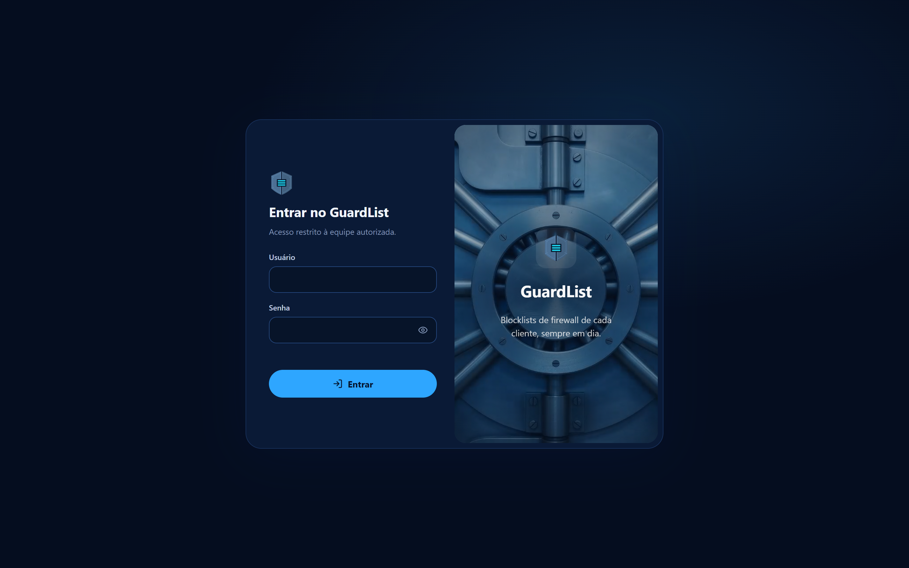
- Menu à esquerda: Painel geral, depois três grupos: Bloqueios (Listas dos clientes, Importação, Revisão, Histórico), Análise (Análise de IP, Inteligência de IPs, Relatórios) e Gestão (Gerenciar clientes, Administração, Backup).
- Barra do topo: busca rápida de IP, CIDR ou domínio em todas as listas, e os botões Gerar caso e Assistente IA.
- Tema: o botão Modo claro / Modo escuro fica no fim do menu.
- Sua conta: clique no seu nome no topo do menu para trocar a senha e ver as sessões abertas.
Há dois papéis: analista (trabalha nas listas) e administrador (também cuida de usuários, aprovações, backup e exclusão de clientes).
Painel geral
O Painel mostra, num olhar, quais clientes estão atrasados e quanto está bloqueado. Os clientes aparecem do mais urgente para o em dia.
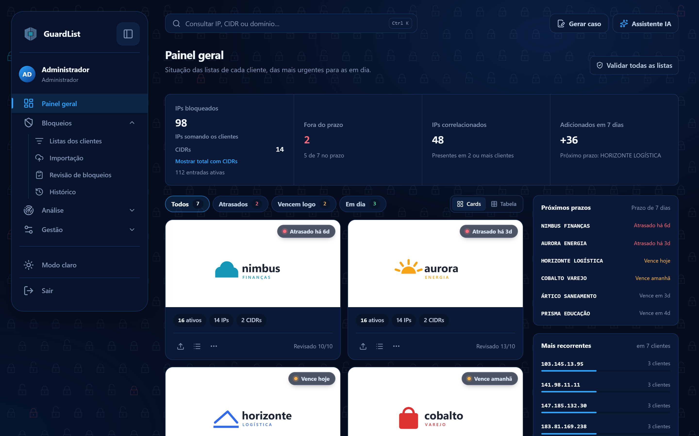
- IPs bloqueados: soma dos IPs de todos os clientes, sem contar o que está dentro dos CIDRs, e a soma dos CIDRs. O mesmo IP em dois clientes conta duas vezes, como nos firewalls.
- Mostrar total com CIDRs: opcional. Conta cada CIDR pelo tamanho (um /24 vale 256). A escolha fica lembrada no navegador e vale também dentro de cada cliente.
- Fora do prazo: clientes com revisão atrasada. Clique no quadro para filtrar só eles.
- IPs correlacionados: indicadores presentes em 2 ou mais clientes. Clique para abrir a Inteligência de IPs.
- Filtros: Todos, Atrasados, Vencem logo e Em dia. Alterne entre Cards e Tabela no canto direito.
- Card do cliente: clique em qualquer parte para abrir a lista dele. Os ícones do card importam bloqueios, abrem a lista ou baixam o .txt.
- Botão direito no card: atalhos do cliente (abrir lista, importar, baixar .txt ou NANO).
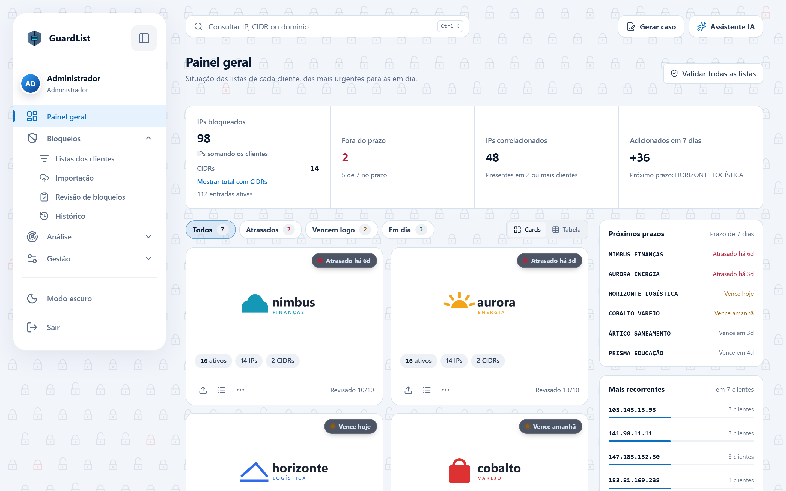
Importação diária
A importação grava os bloqueios do dia na lista de um cliente, depois de mostrar o que é novo, o que já existe e o que é arriscado bloquear.
- Abra Bloqueios → Importação (ou o ícone de importar no card do cliente).
- Escolha o cliente e preencha o ticket e o motivo.
- Escolha o modo: Adicionar (o normal) ou Substituir a lista inteira.
- Cole os indicadores, um por linha: IPv4, IPv6, CIDR ou domínio. Linhas com # são ignoradas.
- Clique em Pré-visualizar. A reputação dos IPs novos é consultada sozinha (até 100 por vez).
- Revise as abas (tabela abaixo) e use Copiar N novos ou Gerar caso se precisar.
- Clique em Gravar. O app salva uma versão da lista antes e gera o relatório da importação.
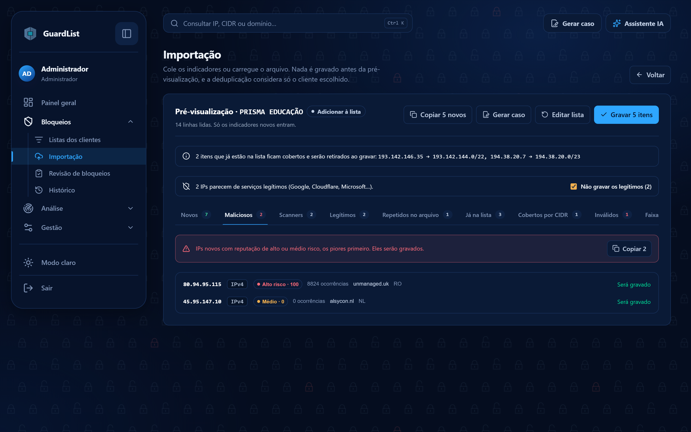
| Aba | O que mostra | É gravado? |
|---|---|---|
| Novos | Itens que ainda não estão na lista | Sim |
| Maliciosos | Novos com risco alto ou médio, os piores primeiro | Sim |
| Scanners | Censys, Shodan, Shadowserver e lista branca do AbuseIPDB | Sim (tire-os se a equipe não bloqueia scanners) |
| Legítimos | Google, Cloudflare, Microsoft e outros serviços conhecidos | Não, com “Não gravar os legítimos” ligado |
| Repetidos no arquivo | O mesmo item colado mais de uma vez | Não |
| Já na lista | Já bloqueado neste cliente | Não |
| Cobertos por CIDR | IP que já está dentro de um CIDR da lista | Não |
| Exceções do cliente | Bate com uma exceção (gateway, parceiro, a própria empresa) | Nunca |
| Inválidos | Linha que não é IP, CIDR nem domínio | Não |
| Faixas privadas | RFC 1918, loopback e afins | Só se marcar “Incluir mesmo assim” |
Analistas precisam da aprovação de um administrador para substituir a lista ou gravar lotes grandes (acima de 500 itens). O lote fica em “Suas importações enviadas para aprovação” até ser decidido.
Listas dos clientes
Cada lista é isolada: busca, marcações e exportações valem só para o cliente escolhido no topo.
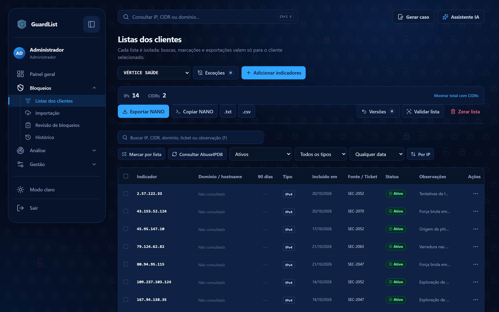
- Contagem: IPs e CIDRs do cliente, e o total com CIDRs se a opção estiver ligada.
- Buscar e filtrar: por IP, CIDR, domínio, ticket ou observação; por situação (ativos, removidos), tipo e data. Por IP ordena numericamente.
- Marcar por lista: cole vários IPs para encontrá-los e selecioná-los de uma vez.
- Exportar: Exportar NANO (separa IPs e CIDRs para o firewall), Copiar NANO, .txt e .csv.
- Versões: cada importação ou limpeza salva uma versão. Restaure para desfazer um erro, ou salve uma versão manual antes de algo arriscado.
- Validar lista: acha repetidos, IPs dentro de um CIDR da própria lista e conflitos com exceções, e retira tudo de uma vez (com versão salva antes).
- Exceções: IPs, redes ou domínios que nunca podem ser bloqueados neste cliente; a importação recusa o que bater com elas.
- Consultar AbuseIPDB: preenche domínio e denúncias dos IPs da página.
- Menu “…” de cada linha: analisar o IP, dossiê, onde mais está bloqueado, comentar, editar observação, bloquear em outros clientes, adicionar exceção, marcar como removido.
- Zerar lista: apaga todas as entradas do cliente; pede o nome do cliente para confirmar e salva uma versão antes.
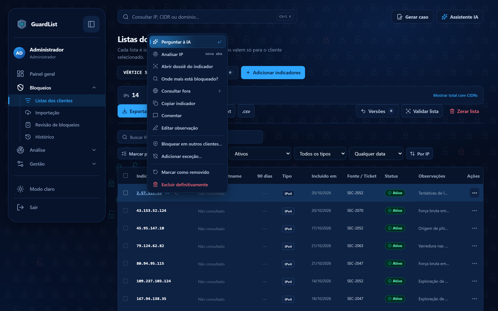
Remover um item não apaga o histórico: ele fica como “removido” e continua aparecendo nas buscas.
Análise de IP e dossiê
Para validar um IP, clique nele com o botão direito em qualquer tela e escolha Analisar IP: a análise abre numa aba nova e você não perde a página em que estava. Também dá para abrir Análise → Análise de IP e colar o IP.
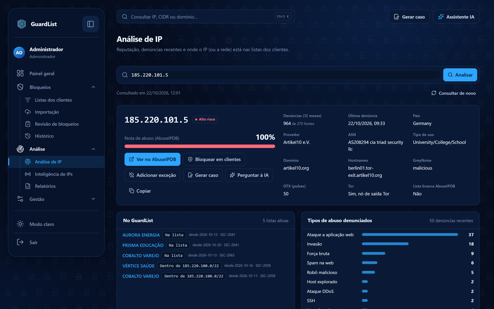
- IP: nota de abuso do AbuseIPDB, denúncias dos últimos 12 meses, país, provedor, ASN, domínio, hostnames, GreyNoise, OTX, Tor e lista branca; os tipos de abuso denunciados e as 50 denúncias mais recentes.
- Rede CIDR IPv4 (ex.: 193.32.162.0/24): quais IPs da rede foram denunciados nos últimos 30 dias, os piores primeiro. O plano grátis do AbuseIPDB só aceita redes de até /24.
- No GuardList: em quais clientes o IP ou a rede está, se está dentro de um CIDR, se é exceção ou se foi removido.
- Ações: Ver no AbuseIPDB, Bloquear em clientes, Adicionar exceção, Gerar caso, Perguntar à IA, Copiar.
- Cota: a análise fica guardada por 1 hora; reabrir o mesmo IP não gasta consulta. Consultar de novo força uma consulta nova. O link da aba (com ?analisar=) pode ser enviado a um colega.
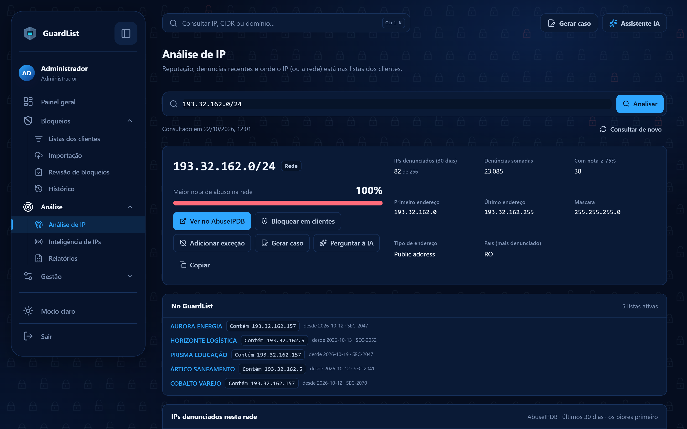
O dossiê (botão direito → Abrir dossiê do indicador) é a versão resumida, numa janela: presença nas listas, linha do tempo das inclusões e remoções, e os cartões do AbuseIPDB, GreyNoise e OTX. Só aparecem dados reais: fonte que não respondeu mostra “Sem dados”.
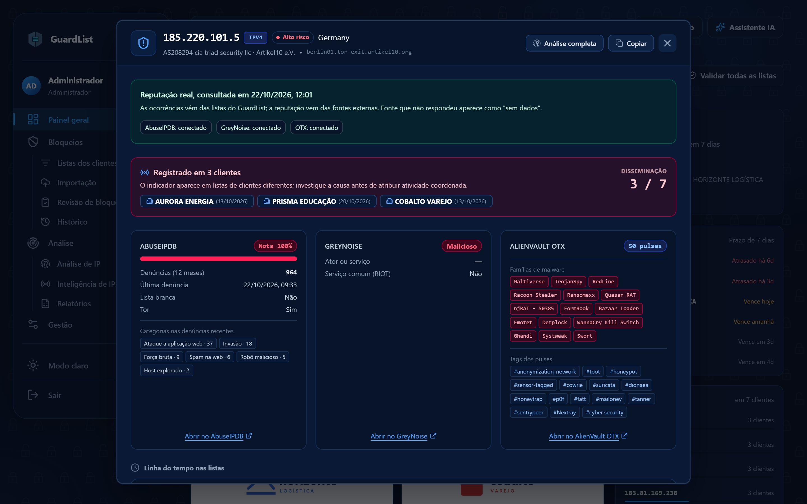
| Veredito | Quando aparece |
|---|---|
| Alto risco | Nota ≥ 75%, 50 ou mais denúncias, ou GreyNoise “malicious” |
| Médio | Denúncias ou alertas do OTX abaixo disso; o motivo aparece embaixo do IP |
| Baixo risco | Sem denúncias relevantes |
| Scanner conhecido | Censys, Shodan e outros scanners de pesquisa, ou lista branca do AbuseIPDB |
| Legítimo | Serviços conhecidos (Google, Cloudflare, Microsoft…) com nota baixa |
| Sem dados | Nenhuma fonte respondeu |
Gerar caso para o cliente
Gerar caso monta o texto que vai para o cliente, no modelo da equipe, e registra o caso para não informar o mesmo IP duas vezes.
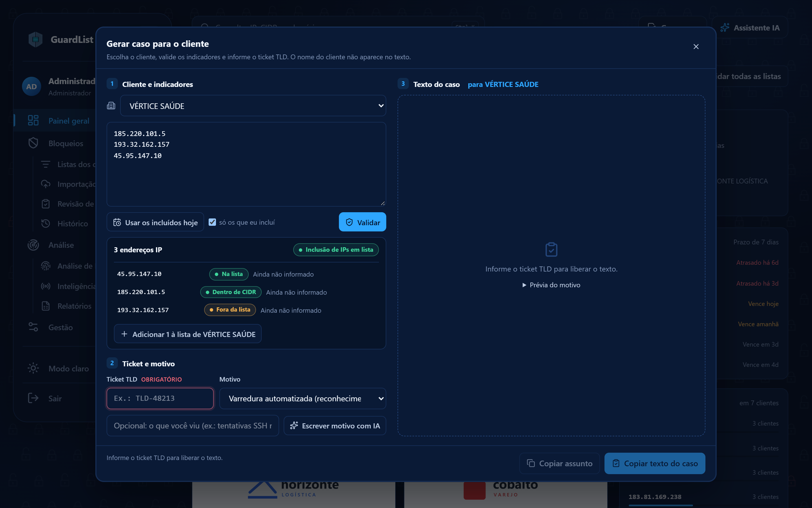
- Clique em Gerar caso no topo (ou no botão direito de um IP, ou na pré-visualização da importação).
- Escolha o cliente e cole os IPs, ou use os incluídos hoje.
- Informe o ticket (obrigatório) e o motivo; a IA pode escrever o motivo, se estiver ligada.
- Confira a situação de cada IP: já na lista, fora dela, ou já informado em outro caso.
- Se faltar algum IP na lista do cliente, use Adicionar N à lista do cliente.
- Copie o texto. Se ainda houver IPs já informados antes, o app avisa; use Gerar mesmo assim só quando for de propósito.
Revisão, Histórico, Relatórios e Inteligência
| Tela | Para que serve |
|---|---|
| Revisão de bloqueios | Bloqueios antigos que não reapareceram nas importações, sem revisão e sem denúncias recentes: mantenha o que ainda faz sentido e remova o resto |
| Histórico | Cada importação gravada, com o que entrou e o que foi descartado; o gráfico mostra os novos indicadores por dia e Ver abre o relatório da importação (CSV, PDF, copiar, gerar caso) |
| Relatórios | Resumo de um período (Hoje, Esta semana e outros) para a operação ou um cliente, com bloqueios por dia; sai em planilha CSV ou PDF com a marca, pronto para o cliente |
| Inteligência de IPs | Indicadores bloqueados em 2 ou mais clientes, a sobreposição entre clientes e a evolução das listas (países, provedores e reputação dos IPs) |
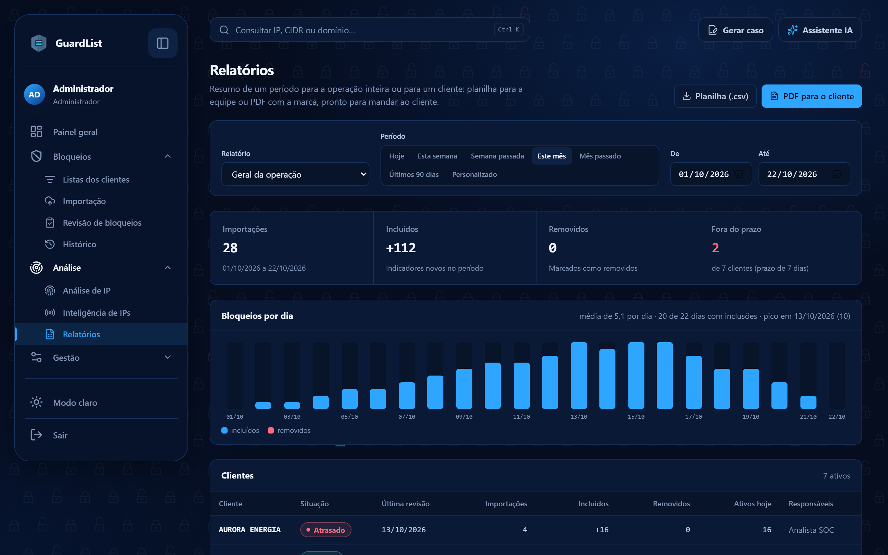
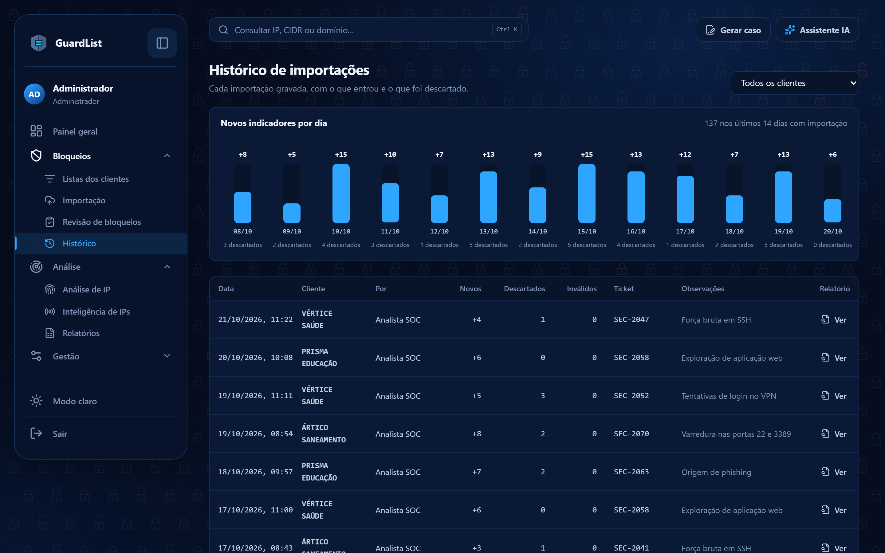
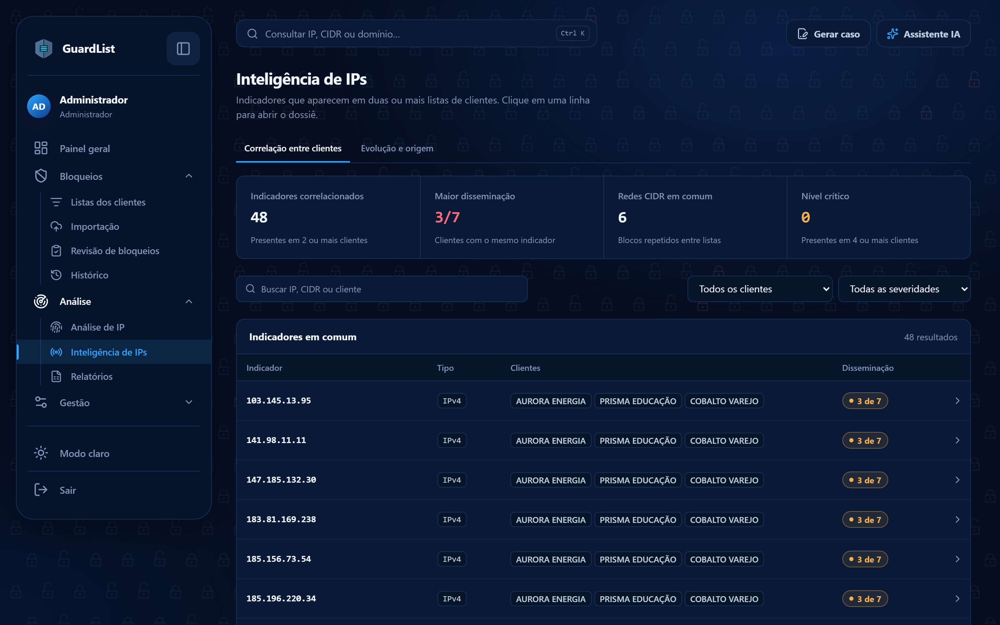
Assistente IA
O assistente responde perguntas sobre os dados do GuardList, como “quais clientes estão atrasados?” ou “quais IPs aparecem em mais clientes?”. Abra pelo botão Assistente IA no topo ou com Ctrl + J.
- Perguntar à IA no botão direito de um IP traz resumo, reputação e recomendação daquele indicador.
- O assistente roda num modelo configurado no servidor da empresa. Quando não há modelo configurado, os botões de IA não aparecem.
- Confira o que a IA diz antes de agir: ela resume os dados do app e da reputação, mas pode errar.
Gestão (administradores)
- Gerenciar clientes: criar, renomear, arquivar e excluir clientes, e escrever a observação (contato, janela de manutenção). Clique na capa do cliente para trocar a logo: busque no site do cliente ou envie um arquivo; a capa usa o fundo da própria logo.
- Administração: contas da equipe (criar, papel, redefinir senha, encerrar sessões), importações que aguardam aprovação, trilha de auditoria e saúde do sistema.
- Backup e ajustes: baixe um backup de vez em quando para ter uma cópia fora do servidor; o menu avisa há quantos dias foi o último. Ali também ficam os ajustes, como o prazo de revisão e o limite de aprovação.
Atalhos e botão direito
As teclas de uma letra funcionam fora de campos de texto.
| Atalho | Faz |
|---|---|
| Ctrl + K | Busca rápida em todas as listas |
| Ctrl + J | Abre o Assistente IA |
| D | Painel geral |
| I | Importação |
| L | Listas dos clientes |
| R | Revisão de bloqueios |
| H | Histórico |
| T | Inteligência de IPs |
| P | Relatórios |
| A | Administração (administradores) |
| N | Adicionar indicadores (na lista do cliente) |
| F | Buscar na lista do cliente |
Botão direito funciona em todo o app. Num IP: Analisar IP (aba nova), dossiê, onde está bloqueado, bloquear em clientes, gerar caso, adicionar exceção, consultar fora (VirusTotal, Talos e outros) e copiar. Num CIDR IPv4: Analisar rede. Num cliente: abrir lista, importar e baixar .txt. Em área vazia: o menu Ir para leva a qualquer página.
Dúvidas comuns
- Um IP do Censys mostra 0% no AbuseIPDB. Está errado? Não. O AbuseIPDB põe scanners de pesquisa na lista branca, e IP em lista branca sempre tem nota 0%. O GuardList marca esses IPs como Scanner conhecido.
- Por que um IP com 0% aparece como Médio? Porque outra fonte, em geral o OTX, tem alertas sobre ele. O motivo aparece embaixo do IP na Análise.
- A análise de uma rede deu erro de tamanho. O plano grátis só consulta redes até /24. Divida a rede em /24 e consulte cada uma.
- Quanto da cota do AbuseIPDB cada coisa gasta? O plano grátis permite 1.000 consultas por dia. A importação consulta só os IPs novos e guarda o resultado por 72 horas; a Análise de IP guarda por 1 hora.
- Gravei algo errado. Como desfaço? Na lista do cliente, abra Versões e restaure a versão anterior à importação.
- Os números do total com CIDRs parecem enormes. Um único /16 vale 65.536 endereços. Por isso esse total é opcional e o número principal conta só os IPs.
- A logo ou o visual não mudou depois de uma atualização. Recarregue com Ctrl + F5: o navegador guarda imagens antigas.